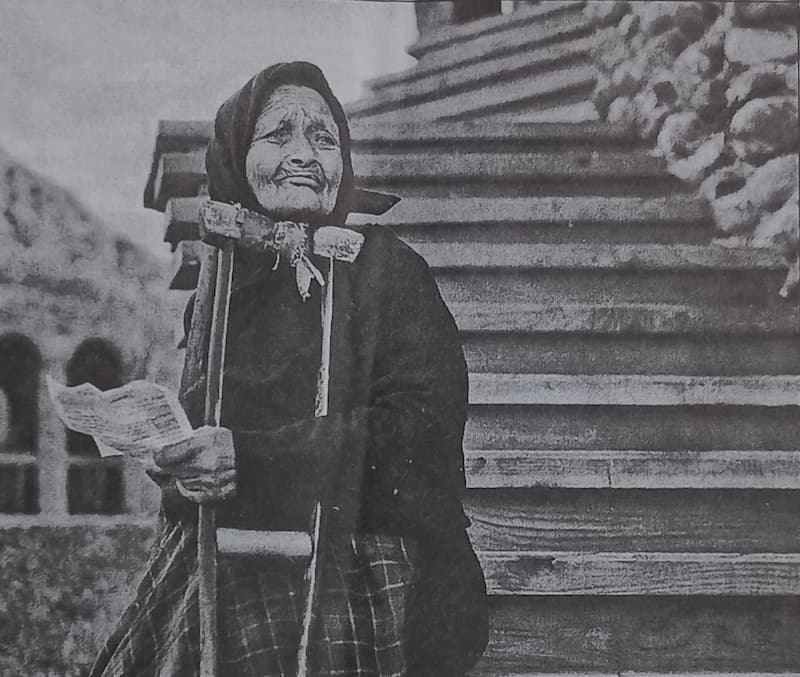

Nu fac parte din generația Agnira-Botorca sau a lui „Stalin și poporul rus/Libertate ne-au adus!” Nu. Mai curând, aparțin generației naive, a lui „Petre, Otto și cu Feri/Se-ntâlniră-n miezul verii/Într-o tabără, la mare./Zece ani au fiecare…”
Despre părinții comunismului am învățat mult după ce am fost făcut pionier… Prin liceu, timid, am încercat să-i citesc pe Karl Marx și Friedrich Engels… dar n-a ieșit nicio brânză: erau grozav de plicticoși! Nu zic că n-avea dreptate Marx, cu sărăcia cumplită a proletarilor irlandezi… dar eu voiam și-oleacă de… „stil”. Deh, mentalitate mic-burgheză…. Abia când, după 1989, bibliotecarele azvârleau, cu grămada, din rafturi, volumele „părinților comunismului”, am putut să pun, și eu, mâna, pe cele trei volume din Capitalul, și să-l citesc, din scoarță în scoarță, în tihnă. Oricum, muzica și versurile Internaționalei („Sculați, voi, oropsiți, ai vieții, / Voi, osândiți la foame, sus! / Să fiarbă-n inimi răzvrătirera, / Să-nceapă-al lumii vechi apus!”… — și mama îmi povestise despre „sfârșitul lumii”, tatăl meu și unchii mei îmi povestiseră despre iadul mizeriei din pușcării și tranșee… — în alimentarele anilor '60 existau de toate, și foarte ieftin! — deci mă revolta mizeria altora, din alte părți! — la 10 ani ești înflăcărat prea tare, ca să mai iei aminte la „factorii care au determinat războaiele și pușcăriile” — le amestecam binișor — așa că… ce importanță mai avea dacă lumea apunea de la apus sau de la răsărit… bine că apunea, cum se spunea la Sfânta Scriptură!) — muzica și versurile Internaționalei, vă mărturisesc sincer, mi-au plăcut, m-au impresionat și chiar înflăcărat infinit mai mult decât manelele și rock-ul de azi!
Nu-i mai puțin adevărat că, la vremea lor, și Am fost medic la Auschwitz, și Jurnalul Annei Frank — apoi, pe jumătate, chiar și filmul Lista lui Schindler — m-au impresionat — până am dibăcit escrocheria „publicitară”, afacerea „di granda” cu „Holocaustul”, speculația chinurilor sărăcimii evreiești, de către coreligionarii lor (speculație aducătoare de multe, foarte multe miliarde de dolari, pentru „crema” Marii Finanțe Mondiale — și așezarea lumii creștine în genunchi, spre pocăință, generală și infinită!) escrocheria protipendadei sionismului, a „poporului ales".
Unchii mei, care tocmai ieșiseră, în 1964, din pușcăriile politice, în care putreziseră, fiecare, vreo 16 ani (după ce a fost pus în libertate, unchiul Sandi, pictorul bisericesc, a fost asasinat, aruncat, cu capul în jos, de pe schelele bisericii pe care o picta, prin județul Buzău), adunați la masă, dădeau din cap, când mă vedeau cum învârt în mâini Capitalul… Ei toți cei martirizați, aflați la masă, dimpreună cu părinții lor, nu vorbeau (de față cu părinții lor!) nimic despre pușcărie, să nu-i îndurereze și mai mult decât o făcuseră, prin pustiirea casei — dar, treptat, am auzit, de la părinții mei și de la unchii mei, apoi am citit și în manualele și cărțile mele, despre Anna Pauker/Robinsohn, Teohari Georgescu/Burach Tescovici, Iosif Chișinevschi/Jakob Broitman, Holban/Moscovich, Marcel Breslașu/Mark Breslau, Aurel Baranga/Ariel Leibovich, Alexandru Graur/Alter Brauer, Mihai Roller etc. Și despre CDE (Comitetul Democrat Evreiesc).
Dar, ce să zic, în librăriile anilor 1967-1985, se găseau de cumpărat, pe lângă Marin Preda, Ștefan Bănulescu sau Alexandru Ivasiuc — și Alexandre Dumas, Charles Dickens, Lord Byron, Dostoievschi, William Shakespeare, Góngora, Calderon de la Barca, Lev Tolstoi, Cehov, Platon, Aristotel, E.T.A. Hoffmann, Schiller, Goethe, Heidegger, Nietzsche, Baudelaire, Rimbaud, Paul Verlaine, Lautréamont, E. A. Poe — un adevărat dezmăț spiritual! Nu-mi trebuia, pe-atunci, mai mult nici mâncare! Abia după 1985 s-a cam „schimbat macazul”, în mintea mea (eram căsătorit și cu trei copii) — când puneam sacoșa, pe la 3 din noapte (cu trei sticle pentru laptele celor trei copii) în clanța de la Alimentara, cu speranța că, pe la ora 10-11, chiar voi putea apuca trei sticle de lapte, pentru cei trei copii. Dar asta-i „altă gâscă-n altă traistă”… Numele de Pacepa începea să șuiere prin urechile mele!
În facultățile anilor '70, studenții aveau burse (cazare, mâncare și-un ban de cumpărat cărți… plus siguranța unui loc de muncă, după facultate!) și erau făcuți membri ai PCR, în ordinea mediilor anuale. Părinții mi-au spus să nu refuz primirea în PCR, ca nu cumva să se răscolească, perfid și tardiv, trecutul legionat al familiei mele. Și i-am ascultat, pentru că am înțeles, în linii mari, primejdia. Dar fără să știu, încă, a face legături reale, între „semiți” și „comunism”.
***
Sunt originar din Bucovina de Sud, orașul Gura Humorului. Pe strada unde am copilărit eu în anii '50 (numită Ilie Moscovici - Cum altfel?) n-a existat picior de antisemit. Ne jucam, cu drepturi egale la bucuria gălăgioasă - și, se vede treaba, acum se vede; bucuria inconștientă! — țânci de 5-6 ani, și Mamciuc-Carpiuc-Hudeniuc, și Goldman-Druckmann-Blumenstein, și Weinkeller-Topfer-Stricknadel, și Rotaru-Macovei-Botez.
Dau mărturie că orice evreu, ucrainean, neamț ori român se naște om de treabă (în mod normal). Doar că prietena noastră cea mai veselă, nebunatică și sinceră, Sofica Goldman, a dispărut, într-o zi - și, după vreo câteva luni, am revăzut-o total schimbată: arogantă, distantă, posomorâtă. Nu mai voia să se joace cu noi, în ruptul capului! Am insistat, toți Mamciucii-Topferii și Botezii - și i-am scos, în fine, un răspuns bosumflat: „Ravvi de la Fălticeni mi-a spus că voi toți sunteți goi, și nu am voie să mă joc cu voi…” Atunci, pe loc, n-am știut ce vrea să zică, și, indignați și uimiți i-am spus că noi, uite, suntem îmbrăcați - mă rog, cu zdrențele de rigoare, pentru niște copii neastâmpărați cum eram, dat că nu suntem goi… să se uite mai bine, poate că i-au slăbit vederile, de atâta carte fălticenească… Mult mai târziu, mi s-a spus ce înțeleg ei prin goi/goimi și că nu era nimic de bine.
Da, iubita mea din copilărie, Sofica lui Marcu Goldman, devenise, în câteva luni, ei - nu mai voia să fie EA… Vai de capul ei, sărmana… Să le fie în nas educatorilor lor, cum nenorocesc suflete nevinovate de copii curați!
Bineînțeles, nu atunci am devenit antisemit (deci, nici anticomunist) - căci habar n-aveam, nici eu, nici părinții, nici prietenii mei, ce-i aia antisemitism (anticomuniști fuseseră, e drept, prin martiraj, toți membrii familiei mele!). Acest cuvânt, antisemitism, nu exista în vocabularul humorenilor. Peste vreo zece ani, întrebând de niște vecini, bărbați dispăruți misterios, prin anii '52-'53, mi s-a spus că i-a anchetat „Wolferița”, fata unui morar evreu. Wolfer - venită pe tancurile rusești, cu ani în urmă - și devenită comunistă-mai-comunistă-decât-Stalin - și i-a băgat pe toți „goimii” la închisoare, după ce îi torturase, cu multă curiozitate, bătâdu-i cu creionul peste testicule. Dar nici atunci n-am devenit antisemit, pentru bunul motiv că habar nu aveau humorenii de acest cuvânt - ei spunând doar, cu năduf și jale, despre cei chinuiți și duși la ocnă de „Wolferița”: „A dracului muiere! Săracu' Macovei, săracu' Andrișel, săracu' Beleca…. - Dumnezeu să-i ierte!” Așa am aflat, eu și prietenii mei, că se poate muri „în invizibil”; unii, care-au afla, erau direct suferitori — căci, între „dispăruți”, erau părinții lor și nimeni nu i-a mai văzut, în niciun fel, niciodată. Dar, ca românul învățat cu răul, nepăsător la istorie și curios de ziua de azi și de azi și de mâine, ne-am continuat jocurile vieții.
Tatăl meu, fost ofițer în armata regală, mi-a povestit cum trăgeau în ofițerii români, pe ferestre, din spate, în 1940, evreii comuniști și-i scuipau, și le smulgeau epoleții… Dar nici atunci n-am devenit antisemit. Mi-am zis: așa a fost în război - rău lucru e oricare război, face din om, neom…
Atunci, mă veți întreba, de ce ne faci să pierdem timpul citindu-ți neroziile tale nesărate - dacă nu ne zici nimic despre antisemitismul și anticomunismul tău? C-așa ai scris în titlu… Păi, eu habar nu aveam de antisemitism - până ce, cu vreo trei-patru ani urmă, în școala unde predau Româna, l-am auzit pe profesorul de Istorie zicând, printre dinți: „Ia uite, n-am vreme să le predau elevilor Istoria Românilor și trebuie, acum, să fac lecții cu ei despre Holocaust… I-au scos din programă pe Mircea și Ștefan, și ne bagă antisemitismul…” Iată c-am fost obligat să aud termenul de antisemitism, am fost obligat să asist la prelegerile profesorului de Istorie despre antisemitism - cu toată școala - prelegeri fixate la cele mai fanteziste date (anunțate de MEC!) - cât mai dese. Cu stupoare, am aflat că noi, bucovinenii și moldovenii, suntem ucigașii de evrei cei mai sângeroși. Păi, o să spun și eu, ca personajul-copil Cubi Lubiș, al lui Sadoveanu (cf. Nicoară Potcoavă, Minerva, Buc., 1970, p.362), când a fost acuzat de băiețașii armeni „cum că l-ar fi omorât și răstignit pe Domnul Hristos”: „- Eu? - să n-ajung acasă cu bine dacă știu de așa ceva. Poate să-l fi omorât băieții lui Moise Lupu, care-s niște golani vestiți, dar eu, nici măcar nu-l cunosc pe acel domn de care vorbiți voi.” Noi, noi să fi omorât evrei? Sunteți nebuni! Bunicii mei mi-au spus cum, când au venit nemții, au avut pivnița plină de evrei, pe care i-au pitit, ca să-i scape de ochii și vigilența nazistă. Eu, eu, care-am fost îndrăgostit lulea de Sofica lui Marcu Goldman? - da' dacă ea m-a părăsit, cum că-s „goi" - eu ce stric și cu ce-s de vină? Poate părinții ei și rabinul de la Fălticeni, care-s rasiști vestiți, să-i fi omorât sufletul…
Iată cum am auzit eu de antisemitism - dar nici vorbă să fi devenit, atunci, în 2002-2003, antisemit. Și, deci, nici cine știe ce anticomunist. Am zis că-i o nebunie, ca oricare alta, și-o să treacă, așa cum toate trec. Dar n-a fost să fie așa! În 2005, aud de faptul că marele poet român LIVIU IOAN STOICIU e dat afară din postul de redactor șef-adjunct, de la Viața românească (și judecat, stalinist, de Consiliul USR!), pentru că l-a publicat pe GOMA - un Jurnal, nu știu ce - care GOMA ar fi mare antisemit. M-a pufnit un râs nebun: cum să fie antisemit, unul care are nevastă evreică, și, deci, feciorul lui e semi-evreu? S-o fi certar omul cu nevastă-sa, și, astfel, a devenit antisemit… Păi așa, la mine în cartier sunt numai antiromâni, căci zilnic se ceartă, nevoie mare, cu soațele lor, românce!

Am pus mâna pe numărul dublu, 6-7, din iunie-iulie 2005, al Vieții românești. Știam, de la tatăl meu, fost ofițer în armata regală, precum v-am spus - că ceea ce spunea GOMA era perfect adevărat, despre „martirizarea, uciderea românilor [n.n.: de evrei], cu un an mai devreme, începând din 28 iunie 1940, în Basarabia și în Bucovina de Nord ocupate de bolșevici” - de ce să mă fi mințit atât de necăjitul meu tată, cumplit persecutat de comuniști? Dar, pentru Dumnezeu, de ce să dezgropăm morții, iar și iar? Păi, dacă-i dezgropăm pe cei ai evreilor - se ridică din mormânt toate neamurile pomenite în Vechiul Testament, și aneantizate, prin genociduri (zice Cartea Sfântă, negru pe alb și cu mândrie trufașă!) de către poporul lui Israel, se scoală din mormânt sutele de milioane de piei roșii și sutele de milioane de negri, măcelăriți de „stăpânii lumii”, de cei ce-și zic azi S.U.A., și Anglia, și Spania, și Portugalia, și Franța - mă rog, toată „lumea bună”, din NATO și UE „modelele” sacre ale democrației mondiale. Se scoală și armenii, măcelăriți, cu scop de exterminare, de turcii aspiranți la UE dar, mai ales, se scoală japonezii, despre care scriam, într-un articol din 2003, din revista CONTRA ATAC - Adjud, Anul IV, nr. 11, p. 20: Ministrul și Holocaustul: „JAPONEZII — singurii din lume (n. mea: dacă n-ar trebui să-i punem la socoteală pe vietnamezii arși cu napalm, în anii '60-70, pe irakienii și sârbii iradiați în anii '99-2003 - sârbilor, bombardați de Paștele ortodox, li se scria, de către americani, pe bombe: „Paște fericit!”) - care au fost arși DE VII, în întregime, DE TOT (n. n: „holos+haustos”…), la Hiroshima și Nagasaki, prin ordinul criminal al președintelui american Harry S. Trumann (…), de le-au rămas doar umbrele, «fotografiate» pe pereții caselor…” Și se scoală și morții palestinienilor nedreptățiți din 1948 (anul creării artificiale a Statului Israel) - situație despre care scrie americanul Thomas Nelson, în The puritans of Massachussets, Judaism, vol. XVI, nr. 2, 1967 - tot negru pe alb: „Forța pumnului evreu, astăzi, vine de la mănușa de oțel americană, care îl acoperă, și de la dolarii cu care este căptușită (…). Statul israelian nu poate fi format decât după un breviar al urii, drept unică motivație a tineretului său, a armatei sale, a întregului său popor (…), Armata israeliană invadează Libanul și omoară acolo zeci de mii de oameni: operațiunea se numește PACE ÎN GALILEEA(!!!)… În Israel, pentru a convinge că Palestina era un deșert înainte de înființarea statului Israel, sute de sate(palestiniene) au fost rase de pe fața pământului cu buldozerul, cu casele și acareturile lor, cu cimitirele și mormintele lor (…)”. Scriitorul și politologul evreu Norman G. Finkelstein (cf. Industria Holocaustului, Samizdat, 2000) îi acuză pe conaționalii săi că speculează tema „holocaustului”, pentru a trage foloase bănești uriașe, șantajând statele lumii - și pentru a obține reclamă gratuită (și agresivă) - pe spinarea unor bieți morți și chinuiți, din trecut. Evreul Jean Gabriel Cohn-Bendit scrie: „Să luptăm pentru a fi distruse aceste camere de gazare ce sunt arătate turiștilor în lagăre, unde acum se știe că nu au existat niciodată, deoarece ne asumăm riscul de a nu mai fi crezuți nici despre ceea ce suntem siguri”. De ce nu li se intentează procese, cu ani grei de temniță, de ce nu sunt dați afară (de unde? de pe planeta Terra?) - acești evrei (Finkelstein, Cohn-Bendit etc.), care spun astfel de adevăruri, despre conaționalii și coreligionarii lor? Sau, vorba iubitei mele din copilărie, Sofia lui Marcu Goldman, noi suntem goimi, și cu noi „nu se mai joacă nimeni” (că interzice rabinul-șef de Fălticeni!) - și numai noi trebuie să suferim sancțiuni interne și internaționale? Problemele adevărate ale evreimii sunt o afacere de familie și, deci, discută și se păruie doar între ei, evreii! - pe când goimii, care n-au avut norocul și partea învățăturii și înregimentării de sinagogă - trebuie să plătească din greu, cu bani și umilință, acest deficit (devenit DELICT!) de educație…
Căci, aflu din Comunicatul US din România că președintele N. Manolescu și acoliții săi, în cazul GOMA-STOICIU: „nu doresc limitarea libertății de exprimare a opiniilor, ci doar încadrarea expunerii acestora în limitele unanim acceptate în lumea civilizată” Ce-o fi însemnând, în limbajul de lemn al neo-liberalismului mondial actual, al așa-zisei „political corectness” (corectă cu unii, incorectă cu alții - cu cățeii una, cu dulăii - alta…): „limitele acceptate în lumea civilizată”? Și Stalin, și Hitler - erau foarte democratici și corecți și civilizați, deci!!!, dar, firește, în „limitele unanim acceptate” de tribul comuniștilor, respectiv al naziștilor. Dincolo de unanimitatea tribului politic - erau mitraliera, Naganul, primitoarele pivnițe ale Gestapo-ului ori NKVD-ului…
***
Și, iată că vine data de 18 decembrie 2006: „Raportul Tismăneanu provoacă mari convulsii pe scena politică.
Luni, 18 Decembrie 2006: Președintele Traian Băsescu prezintă, astăzi, în Parlament, concluziile raportului Comisiei pentru analiza dictaturii comuniste, condusă de Vladimir Tismăneanu și va cere condamnarea comunismului.
Solicitările publice privind condamnarea comunismului adresate Cotroceniului au căpătat consistență după 9 mai 2005, când președintele Băsescu a fost prezent, la Moscova, la ceremoniile legate de aniversarea Zilei Victoriei împotriva fascismului. Aproape un an mai târziu, la 5 aprilie 2006, președintele Traian Băsescu a anunțat că a decis să înființeze o comisie prezidențială pentru analiza dictaturii comuniste din România. Istoricul și politologul Vladimir Tismăneanu a fost desemnat să conducă grupul de experți însărcinat să elaboreze sinteza științifică dorită de șeful statului.
În comisie au mai fost cooptați Sorin Alexandrescu, Sorin Antohi, Mihnea Berindei, I.P.S. Nicolae Corneanu, Radu Filipescu, Monica Lovinescu, Sorin Ilieșiu, Gail Kligman, Nicolae Manolescu, Horia Roman Patapievici, Marius Oprea, Dragoș Petrescu, Andrei Pippidi, Romulus Rusan, Stelian Tănase, Constantin Ticu Dumitrescu, Cristian Vasile și Alexandru Zub. Din comisie a făcut parte și Virgil Ierunca, decedat la sfârșitul lunii septembrie.”
Dintre cei implicați în „plodirea Raportului”, Tismăneanu/Tismenețki ar fi trebuit să tacă mâlc, „din motive de familie”, dar și de, ca la baschet, „greșeli personale”, accentuate și repetate - iar unii dintre cei citați drept „cooptați” s-au dovedit, ulterior, foști (?!) turnători la Securitate. Domnul-tovarăș comunist Băsescu nu credem a fi fost, „via Anvers”, suficient de „curățel”, pentru a se încumeta să pozeze în „chevalier sans peur et sans reproche”. Și, ia să mai vedem un lucru, destul de interesant. Legat de adevărurile copilăriei mele, cu unchi prin pușcăriile comunismului stalinist — dar și de „adevărurile” mincinoase, ale „democrației” masonice contemporane, exprimate, la modul cel mai profund bolșevic, de către „political correctness”. În definitiv, Marea Finanță a dat bani (cu suspectă generozitate și dezinvoltură!), prin Rotschild, prin frații David și Nelson Rockefeller etc., ÎN MOD EGAL, tuturor părților - COMUNIȘTILOR, CA ȘI NAZIȘTILOR!!! Lui Ossama bin Laden, cât și CIA!
***
Uitați-vă ce Raport am găsit, în Arhive, despre ziariștii „români…(?!) - de la 1 aprilie 1943, până la 31 decembrie 1943. Și, ca urmare, am scris un articol, evitat (cu ochii…) de toată lumea! Câtă spaimă bolșevico-liberală, stârnește ea, coana mare: «POLITICAL CORRECTNESS»!
1 - Zaharia Jac (Iacob Zalmanovici) – n. Focșani, 14 XI 1890, evreu; Lupta și Semnalul;
2 - Zaharia N. Theofile (Tobias Zalmanovici) – n. Iași, 10 III 1894, evreu; Universul;
3 - Zissu Sergiu (Sűssmann) – n. București, 3 VII 1896 – ?; Lupta;
4 - Zsigmond Nicolae (Zeiner Maximilian) – n. Timișoara, 1 III 1885 – ? ; Erdelyi Friss și Ujsag
5 - Volbură Radu (Max Coldenberg) – n. Adjud, 1899, evreu; Curentul-Galați;
6 - Zaharia Arthur (Zalmanovici) – n. Iași, 31 X 1906 – radiat!; Curentul;
7 - Vifor Radu (Moisă Rorlich) – n. Piatra Neamț, 1894, evreu; Curentul;
8 - Vișan I.L.Al. (Alter Iosipovici) – n. București, 1904, evreu; Epoca;
9 - Török Tiberiu – n. Oradea, 9 III 1908, evreu; Erdelyi Magyarszag;
10 - Toma Solomon A. – n. Urziceni, 11 II 1875; radiat! ; Adevărul și Dimineața;
11 - Vainstein Ruvin – n. Chișinău, 26 X 1892; radiat!; Poșta Basarabiei;
12 - Vainstein Struli – n. Chișinău, 27 XII 1891; radiat!; Unser Zeit;
13 - Terziman Alexandru (Ițic Altersohn) – n. Stănișești-Tecuci, 14 IX 1894; Izbânda;
14 - Stromingher Moise – n. Panciu, 28 III 1895, evreu; Argus, Dreptatea, Adevărul, Dimineața, Semnalul, Jurnalul…
15 - Sulcină Adrian (Schor Arnold) – n. Roman, febr. 1881, evreu; Universul, Adevărul, Dimineața;
16 - Șuțu Ion Rudolf (Rudo) – n. Iași, 27 VII 1870; radiat!; Universul, Adevărul, Dimineața;
17 - Szomary Oscar – n. Arad, 22 IV 1890; evreu; Prezentul, Ellenzec, Magyar Neplap;
18 - Steinhaus Martin – n. Timișoara, 21 VI 1912 ; evreu; Aradi Közlöny;
19 - Stelescu Alexandru (Stern Alter) – n. Brăila, 3 IV 1991; radiat!; Gazeta;
20 - Streitman St. Henric – n. Piatra Neamț, 1 II 1870; evreu; Semnalul, Reporter, Vocea Galaților;
21 - Stroe M. George (Strulovici M.) – n. Buc., 8 V 1903; evreu; Argus;
22 - Samson P. (Abramovici P. Samson) – n. Tecuci, sept. 1907; evreu; Lumea, Lupta, Jurnalul;
23 - Sarkany Gabriel (Saltzberger) – n. Timișoara, 24 XII 1878; evreu; Temesvarer Zeitung și Personal;
24 - Roman R. Al. (Alter Ronetti-Rosenberg) – n. Tg. Neamț, 11 III 1908; evreu; Ordinea;
25 - Rosenberg Arpad (Rado) – n. Sârșig, 1 I 1909; evreu; Estilap;
26 - Rosenblatt Isac – n. Cernăuți, 28 III 1898; radiat!; Algemeine Zeitung;
27 - Rosental Zelman – n. Telenești-Orhei, 20 X 1889; radiat!; Unser Zeit;
28 - Rosenthal Iacob – n. Botoșani, 27 IX 1879; radiat!; Agenția Rador, Direcția Presei;
29 - Rosenthal-Relea Aurel – n. Pitești, 13 V 1905; radiat!; Adevărul, Dimineața;
30 - Ross Joseph (Rosenfeld) – n. Iași, 1 I 1899; radiat!; Adevărul, Dimineața;
31 - Roșu Marin (Maier Goldenberg) – n. Craiova, 29 V 1901; radiat!; Gazeta, Cuvântul;
32 - Râpeanu Benjamin ((Rosenberg) – n. P. Neamț, 5 VI 1897; evreu; Opinia, Adevărul, Dimineața;
33 - Ranta Adrian (Rosenfeld) – n. Galați, sept. 1901; radiat!; Lupta, Semnalul;
34 - Ring Camil (Sufrin) – n. Iași, 20 V 1909; radiat!; Tempo, Semnalul;
35 - Rodan-Cronberg Victor – n. Galați, 21 VII 1898; evreu; Curentul, Dreptatea;
34 - Pilisi Geza (Pilitzer) – n. Fuzesgyarmat, 12 VII 1889; evreu; Arady Közlöny;
35 - Pogany-Salamon Marcell – n. Bontida-Cluj, 5 XII 1995; radiat!; Brasoi Lapok;
36 - Pauker G - n? – radiat!; Jurnalul;
37 - Paukerow Leonard – n. Chișinău, 6 XI 1886; radiat!; Prezentul;
38 - Peltz Isac – n. Buc., 1899; evreu; Lupta, Presa Politică și Financiară, Personal;
39 - Păstorescu S. (Schaffermann Simon) – n. Botoșani, 11 II 1903; evreu; Ancheta;
40 - Pasztor Nicolae – n. Oradea, 18 II 1991; evreu; Nagyvaradi Friss, Ujsag, Erdelyi Magyarszag;
41 - Pauker Emanoil Mendel – n. Iași, 8 XI 1891; evreu; Adevărul, Dimineața, Finanțe și Industrie-Personal;
42 - Nudelman David – n. Chișinău, 11 II 1888; radiat!; Poșta Basarabiei;
43 - Orester Moise – n. Chișinău, 3 IV 1900; radiat! ; Pessarabscoe Slovo Gazeta;
44 - Millian-Maximin G. (Mendel Grunberg) – n. Ploiești, 1 IX 1885,; evreu; Lupta, Personal;
45 - Milorian Sergiu (Solomon Swiebel) – n. Buc., 19 IX 1901; radiat!; Mișcarea, Zorile, Gazeta;
46 - Mohr Solomon (Faust Mohr) – n. Focșani, 30 VIII 1882; radiat!; Ora 8, Comedia;
47 - Moncinschi Vladimir – n. Chișinău, 12 X 1887; radiat!; Poșta Basarabiei;
48 - Moscovici Ilie – n. Băiceni-Iași, 26 XI 1885; radiat!; Vorwarts, Socialismul, Mișcarea Socială;
49 - Miereanu M. (Iacob Moses Hönig) – n. Iași, 13 V 1875; evreu; Universul, Personal;
50 - Marton Ștefan Ladislau Iuliu – n. Oradea, 21 V 1898; evreu; Estilap;
51 - Massoff Ioan – n. Buc., 17 VI 1904; evreu; Rampa, Jurnalul;
52 - Mauermeister-Zidăreanu Alexandru – n. Hâncești-Lăpușna, 20 IV 1897; evreu; Universul;
53 - Marcovici Moritz – n. P.Neamț, 27 I 1899, evreu; Viitorul;
54 - Marcu-Holda Ana (Nathansohn) – n. Tg. Neamț, 31 V 1877; evreică; Viitorul;
55 - Marcus Singer – n. Gura Humorului, 13 VI 1910; radiat!; Czernowitzer Morgenblatt;
56 - Markovits Ernest – n. Livada Nouă, 22 XI 1887; radiat!; Nagyvaradi Friss, Ujsag;
57 - Major Adalbert – n. Pecica Română, 29 X 1900; radiat!; Erdely Hirlap;
58 - Mandel Tiberiu – n. Sibiu, 14 XII 1911, evreu; Aradi Közlöny;
59 - Leipnik Ladislau – n. Timișoara, 8 III 1907; evreu; Temesvarer Zeitung;
60 - Leonte Mihail (Moise Leon Esra) – n. Buc., 8 XI 1873; evreu; Universul;
61 - Lesnea Dimitrie – n. Iași, 1 V 1900; radiat! ; Adevărul, Dimineața, Unirea;
62 - Libros Mircea – n. Buc., 6 XII 1888; evreu; Argus;
63 - Labin Saniel – n. Buc., 9 XII 1877; evreu; Adevărul, Dimineața, Personal, Semnalul;
64 - Landau Michel – n. Hârlău, 7 I 1895; evreu; Unser Zeit;
65 - Landesberg Wiliam – n. com Galgocz-Ungaria, 29 XI 1851; evreu; Banater Bote;
66 - Lăzăreanu Barbu (Bernard Leizerovici) – n. Botoșani, 5 XI 1906; radiat!; Adevărul, Dimneața, Jurnalul;
67 - Kasztner Rudolf – n. Cluj, 14 IV 1906; radiat! Uj Kelet;
68 - Karoly-Klein Alex – n. Arad, 27 III 1894; evreu; Ederlyi Hirlap;
69 - Klekner E. Iosif – n. Brăila, 19 X 1892; evreu; Argus, Adevărul, Dimineața, Semnalul;
70 - Marcu-Balș Petre (Pandrea) – n. Balș-Romanați, 29 VI 1904,; radiat!; Dreptatea;
71 - Jakobovits Elemer– n. Oradea, 5 VI 1897; evreu; Nagyvaradi Szabadszag;
72 - Kadar Emeric – n. Comarno-Cehoslovacia, 12 I 1894; evreu; Ellenzek;
73 - Ionescu Nicolae – n. Focșani, 1 VIII 1902; radiat!; Adevărul, Dimineața, Personal, Curentul;
74 - Ionescu P. Rodica (Wexler-Fundoianu) – n. Iași, 19 V 1910; evreică; Adevărul, Dimineața, Jurnalul;
75 - Ionescu Vion-Vasile – n. Călărași, 4 XI 1890; radiat!; Universul;
76 - Iordan Alexandru – n. Medgidia, 8 VIII 1906; radiat!; Viitorul, Mișcarea;
77 - Honigman Albert – n. Iași, 15 IX 1869; evreu; Lupta, Personal;
78 - Horia Georges (Horowitz) – n. Craiova, 29 XII 1894; evreu; Argus;
79 - Horosz Adalbert (Bela) – n. Cluj, 22 I 1909, evreu; Brassoi Lapok;
80 - Hurtig Alexandru – n. P.Neamț, 1897; radiat!; Argus, Agenția Rador;
81 - Huzella Edmund – n. Oradea, 1891; radiat!; Magyar Lapok;
82 - Haralambie Avram (Leibovici Herș Avram) – n. Bârlad, 23 I 1882; evreu; Adevărul, Dimineața, Argus, Lupta, Jurnalul;
83 - Hartmann H. (Horia Tăriceanu ) – n. Iași, 5 X 1889; evreu; Lupta, Știrea;
84 - Hatszegy Ernest (Zuckermandel) – n. Hațeg, 25 III 1904; evreu; Uj Kelet, Agenția Rador;
85 - Hegedus Ferdinand (Nandor) – n. Oradea, 29 IX 1884; radiat!; Szabadszag Nagyvarad;
86 - Hegedus Paul – n. Botiz, 24 III 1907, evreu; Szamos;
87 - Heller Nicolae – n. Oradea, 29 XII 1910; evreu; Estilap;
88 - Helman Pinco – n. Galați, 5 VI 1899; radiat!; Universul;
89 - Herschkovits-Hajdu Eugen – n. Cehul Silvaniei, 1897; radiat!; Temesvari Friss Ujsag;
90 - Herschkovits-Havas Elemer – n. Cehul Silvaniei, 7 III 1893; radiat!; Erdelyi Friss Ujsag;
91 - Gruia Alexandru (Alter Moise sin Ghidale) – n. Ploiești, mai 1907; evreu; Adevărul, Dimineața, Semnalul;
92 - Haim Leon – n. Georgiu-Bicaz, 23 X 1895; radiat!; Adevărul, Dimineața;
93 - Graur Constantin (Brauer Avram) – n. Botoșani, 24 I 1880; evreu; Adevărul, Dimineața, Personal, Tempo;
94 - Graur Grigore (Brauer Grigori) – n. Botoșani, 23 IV 1884; evreu; Adevărul, Dimineața, Personal;
95 - Grosman Saniil – n. Botoșani, 27 XII 1872; evreu; Curentul;
96 - Grosu Petru – radiat!; Viața Basarabiei;
97 - Fuchs Eugen – n. Budapesta, 26 sept. 1898; evreu; Szatmary Ujsag, Szamos;
98 - Geller Leon (Legrel) – n. Galați, 5 X 1900; radiat!; Dreptatea;
99 - Froda Scarlat (Weitzendorf) – n. Buc., 12 II 1899; evreu; Rampa;
100 - Fainștein-Firoiu Willy – n. Brăila, 27 XII 1911; evreu; Zorile, Gazeta, Personal, Curentul;
101 - Dumbrăveanu Aurel (Avram Berman) – n. Burdujeni, 24 VI 1902; radiat!; Dreptatea, Lupta, Cuvântul, Timpul, Capitala etc. etc. etc.
(Din Cuprinsul Dării de seamă a Organelor de Conducere și Control ale Casei de Retrageri și Pensiuni a Ziariștilor – Anuarul membrilor casei de retrageri și pensiuni a ziariștilor – cu membrii înscriși de la 1 aprilie 1943, până la 31 decembrie 1943)
Bineînțeles, este lista jurnaliștilor de etnie israelită și religie mozaică, care, mai cu curajul de a-și da numele, mai cu șpaga, prin care și-l radiau (…își radiau până și anul nașterii… – deh, pentru orice eventualitate, în acele vremi, de alianță a României cu Germania…), mai cu nume românizate de-a mai mare dragul… – au „branduit” comunismul, în România, prin intermediul presei!
Credeți că am ceva cu cetățenii români, de etnie israelită, nu? Ei bine, NU!!! Cum am mai spus și nu voi obosi să repet, eu respect pe orice om de omenie, indiferent de culoarea pielii ori etnie… Ba chiar îl iubesc și respect – FIREȘTE, DACĂ AM CE RESPECTA ȘI IUBI…
DAR NU POT ÎNGHIȚI SĂ FIU PROSTIT DE LA OBRAZ!!!
De ce v-am oferit, deci, lista (care ar putea continua, aproape la nesfârșit…) jurnaliștilor români – israeliți, prin etnie? Pentru a vedea că Vladimir Tismăneanu și toată liota lui de bolșevici, TOȚI MASCAȚI CA DEMOCRAȚI…!!! – a mințit ordinar, atunci când a prezentat acel Raport (citit de comunistul – de sine însuși recunoscut, în ultima confruntare cu Adrian Năstase, la alegerile din 2004…!!! – Traian Băsescu…) de CONDAMNARE A COMUNISMULUI DIN ROMÂNIA!!! CUM SĂ CONDAMNI COMUNISMUL DIN ROMÂNIA, FĂRĂ ACEASTĂ LISTĂ ANEXATĂ LA… CONDAMNAREA TA?!
Dacă ne uităm în Dicționarul presei românești, al dlui Ion Hangiu, vedem că peste 90% din presa la care lucra armata asta de israeliți (titlurile ziarelor le-am dat, cu bold-aldine, în ultima poziție a tabelului-listă!) – era fie de-a dreptul comunistă, fie înverșunat socialistă… (Nu mai spun, CĂ SE VEDE!!! – ce poziții strategice, CHEIE!!! – ocupau, în presă, jurnaliștii de etnie israelită…). Așadar, pentru aducerea, pregătirea terenului și consolidarea comunismului bolșevic în România, au luptat, din greu, trupe de jurnaliști israeliți…: dacă n-ar fi fost acești „eroi”, de unde naiba am fi știut și învățat noi, valahii ăștia molcomi, conservatori „exasperanți” (pentru mulți…), „cu limba lată” - comunismul bolșevic?! Pun și eu întrebarea, așa… ca să fie… și să mă aflu în treabă… Poate că-mi răspunde, totuși, cineva. Poate «cineva» chiar dintre «liberalii» și «democrații» masoni, care se trag, EGAL CU BOLȘEVICII, de la Revoluția Regicidă de la 1789, din Franța…
***

…Mă trage de mânecă nevasta: „Ia mai taci, ia mai lasă scrisul – nu-i treaba ta! Ai copii de crescut, cine știe ce mai pățesc, săracii!” Păi, a cui e treaba scrisului? A scriitorului! A cui e treaba Adevărului? A Lui Hristos, deci a oricărui creștin – și, în definitiv, având în vedere că „Fi-va o turmă și-un păstor” – a Omului. A omului – pur și simplu. Iar dacă ai mei copii vor vedea că TATA TACE – îl vor disprețui pentru lașitate. Sau – îi voi determina, prin tăcerile mele, să devină, și ei, niște șobolani, găvozdiți prin găuri – pe când Hristos este scuipat, batjocorit, răstignit… Și nu de „băieții lui Moise Lupu” – niște golani! – ci de câtumai șeful meu de Uniune: domnul profesor universitar doctor – și mentor de generație (într-un cuvânt, sau în două?…) NICOLAE MANOLESCU!!!
Și dacă are voie evreul să scrie adevăruri despre evrei – și apoi, să-i înfiereze drept criminali plătitori, pe toți câți îi trece lui prin cap (ori buzunar) – de ce n-aș avea eu voie nu să înfierez pe cineva, ci să desfierez pe cei care n-au făcut alta decât să spună Adevărul, ori să-i lase pe alții să-l spună? Azi o pățesc GOMA (care îndrăznește să zică/„blasfemieze”: „De când au o țară, israelienii au încetat de a mai fi «popor ales», au devenit ca ne-aleșii: egoiști, răi, xenofobi, nedrepți cu goi-ii, brutali, mincinoși, teroriști-de-stat”) și STOICIU – ieri au fost interzise numele și busturile unor personalități ale istoriei românești – mâine – da, mâine: ce se va mai putea întâmpla MÂINE, așa, din lașitate în lașitate, din cedare morală în cedare morală? Suntem înfierați, pe bună dreptate, că ne-am ascuns capetele de struț, pe vremea dictaturilor – acum să fim înfierați că suntem oameni demni, cu fruntea sus și adevărul pe buze? Păi, dacă tot e vorba de suferit, e bine să știi pentru ce suferi, nu să dai din umeri, ca handicapatul mental – iar dacă e vorba de murit, „nu-i totuna leu să mori, ori câine-nlănțuit”… O zicea asta un foarte mare criminal naționalist, deci fascist: GEORGE COȘBUC. Șo pe el, turnați-l degrabă la „hârdăul lui Petrache”… Păcat că-i mort… Nu-i nimic, scoateți-i oasele și azvârliți-i-le pe apă: așa cum fac astăzi ucrainenii, cu morții din neamul meu bucovinean – în Cernăuții Bucovinei de Nord… Tot noi, Doamne – mereu noi, Doamne – iar cei care ne năpăstuiesc să fie „popor/popoare ales(e)”? Alese pentru ca Tu să ne bați cumplit… Iar noi să tăcem? Păi, doar Tu ai spus că, dacă oamenii tac, se vor scula pietrele să dea mărturie!!! À propos: acum, datorită scandalului stârnit de domnul N. Manolescu și de Comunitatea Evreiască, știu ce-nseamnă antisemit! Și, firește, „a fi anticomunist… de ochii lumii”! Dacă nu se nevoiau așa de tare ăștia să dezgroape morții și să îngroape viii – habar n-aveam. Dar zău dacă-mi pare bine c-am învățat și de ce anume am aflat. Sunt amărât. Nici măcar acum nu pot să devin antisemit – dacă semiți vor fi însemnând evreii. Pentru că din biblicul Sem se trag exact cei asasinați de către evrei – arabii palestinieni…
…Și de mai am eu „reziduuri” comunistoide prin „mental”, ele sunt întreținute de un „liberalism” sălbatic și grozav de ipocrit, de junglă (extrem de violent, frate bun cu nazismul, dar și mai bun cu bolșevismul leninisto-stalinist!), promovat prin „criza” băncilor israelite „Lehman Brothers”.
…Grecia se pregătește să dea în judecată băncile Marii Finanțe Israelite din SUA, pentru pornirea bolovanului „crizei” care le distruge poporul, viitorul de Neam și fibra morală!!!
***
…Eu Îl iubesc din tot sufletul pe Cel născut în Bethlehemul Iudeii, pe apostolii Lui evrei (chiar și pe Iuda îl deplâng, c-așa suntem noi, valahii, proști de buni…) – iar iubirea pentru Sofica lui Marcu Goldman mi-a rămas, ca o arsură de nevindecat, în piept… Dar, oameni buni, băgați de seamă una: nu toți oamenii lumii ăsteia s-or fi îndrăgostind romantic, irevocabil de Sofice ale unor Goldmani…
Comunism și… anticomunism?! Abia acum puteți vedea, în lumea toată, autenticul și extrem-violentul comunism bolșevizant, ca în sărmana Rusie „octombristă” a anilor 1917-1922 (…iar ca URSS – până mult după 1953… aș zice că până la Putin!), de care s-a prefăcut a o vindeca evreul Hrușciov… – și, DA, acum chiar am devenit un fervent ANTICOMUNIST, dar asta, tot așa cum am devenit un anti-mason, anti-globalist/anti-internaționalist și, deci, un anti-„liberaloid/mason”, anti-„democratoid/mason” – și, deci, un naționalist atent și lucid, aplecat spre Neamul meu, ca și spre durerile întregii omeniri, înlănțuite de perfid-confecționatele curente ideologice, cu scopul re-învierii Sclaviei Mondiale… NAZISTO-COMUNISTE!), care desființează rase și popoare – interzice, cu perversitate, RELIGIA CREȘTINĂ (mai ales, prigonește ORTODOXIA, prin „ecumenismul” cu forța!) – patriotismul și demnitatea/onoarea… promovând uniformitatea letală a mâncării, băuturii, hainelor, gândirii, uniformitatea grotescă a minciunii „globalizate” și stârnind instincte canibalice în oamenii „civilizați”, de tipul lui Emil Hurezeanu, care declara, mai an, la Realitatea TV, că „Dumnezeu a decis ca populația terestră din emisfera sudică a Terrei să moară de foame” …!!! Asta sună ca idioțenia lui Bush Jr., care a declarat, cu alura lui de cretin solemn, la CNN, că Dumnezeu l-a vizitat și l-a mustrat că ÎNCĂ n-a atacat Afghanistanul și Iraqul…!!! De fapt, îl mustraseră Israelul și Marea Finanță Mondială, din Loja Masonică Skull and Bones (înființată în 1832, în cadrul Universității Yale, lojă iudeo-masonică din care TREBUIE să facă parte orice potențial președinte al SUA!) și din Clubul de la Roma!!!
…Stimați reprezentanți ai „poporului ales”, vă rog smerit: nu mai semănați vânt, că veți culege furtună – și apoi vă veți întreba, făcând-o pe nevinovații, de ce și cum și pentru ce…!!!
AXA ESTE LOCUL DE UNDE AFLI LUCRURI PE CARE CEILALȚI SE SFIESC SĂ LE CITEASCĂ ȘI SE ÎNGROZESC SĂ LE SPUNĂ: PENTRU EI LUMEA E CU MULT MAI APROAPE ȘI MAI IMPORTANTĂ DECÂT MÂNTUIREA